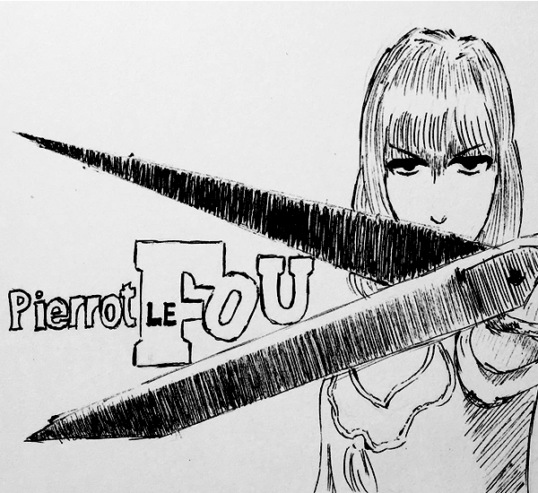

気狂いピエロ

・原題：Pierrot Le Fou
・公開：1965年
・監督：ジャン＝リュック・ゴダール
・制作：フランス／イタリア
以下感想 ※ネタバレ注意
ヌーヴェル・ヴァーグの旗手にして、ジャンプカットや作品内における他作品の引用など、画期的な手法を生み出した映画界の革命児ジャン＝リュック・ゴダール。
彼の作風は非常に前衛的で万人向けとはかけ離れている印象。かく言うワタシも「軽蔑」や「あたりまえの映画」はイマイチピンとこなかったクチですが、「勝手にしやがれ」、「ウィークエンド」、そしてこの「気狂いピエロ」は大好きな作品です。その要因は、小難しいようでいて確かな普遍性が感じ取れるからなのだと思います。
ヌーヴェル・ヴァーグとは？
※途中です※